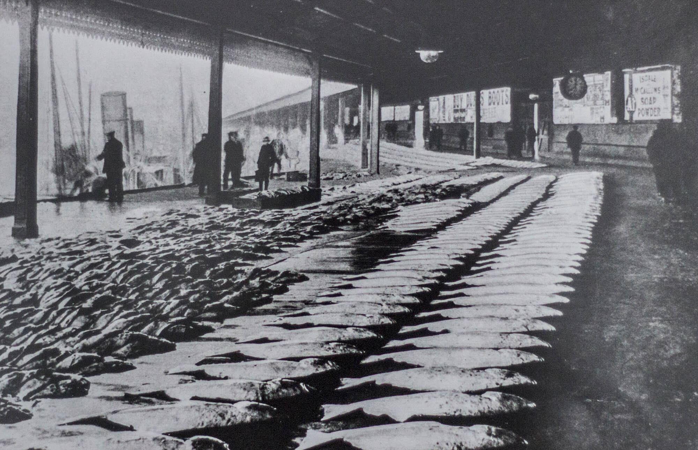
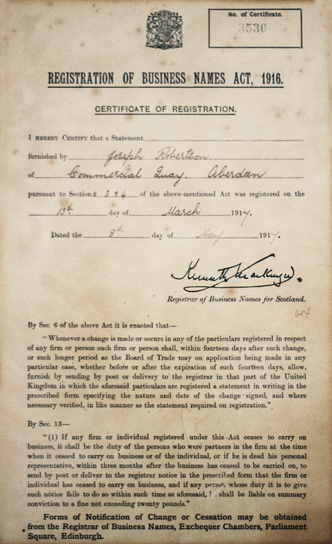
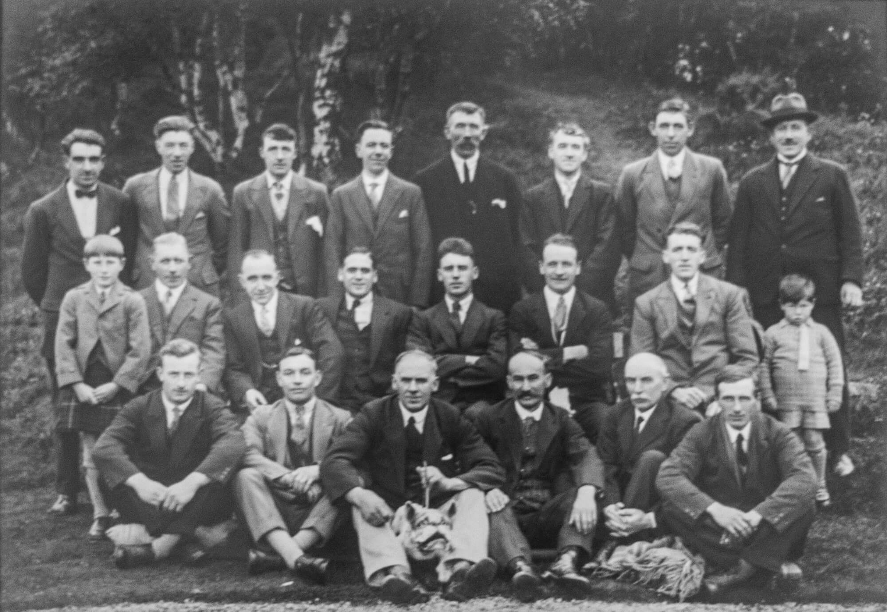
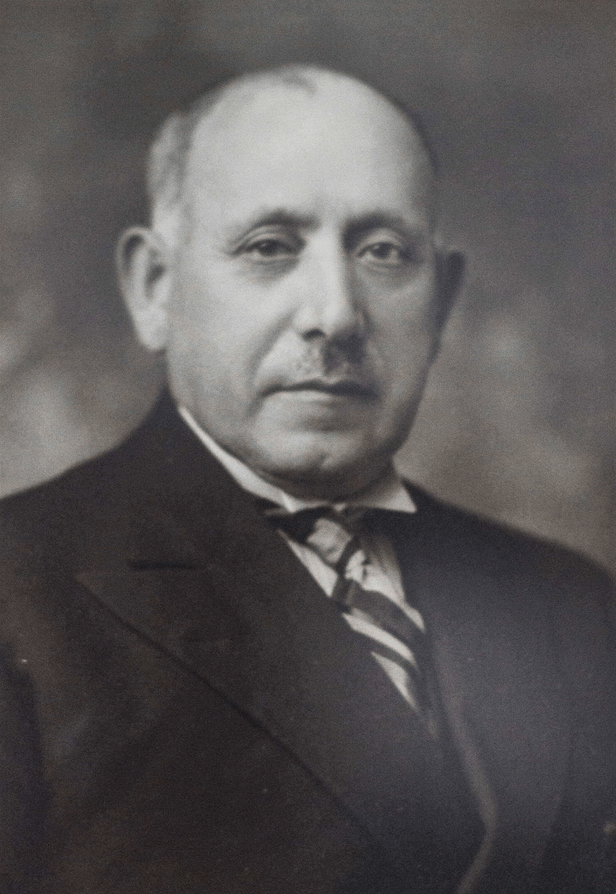
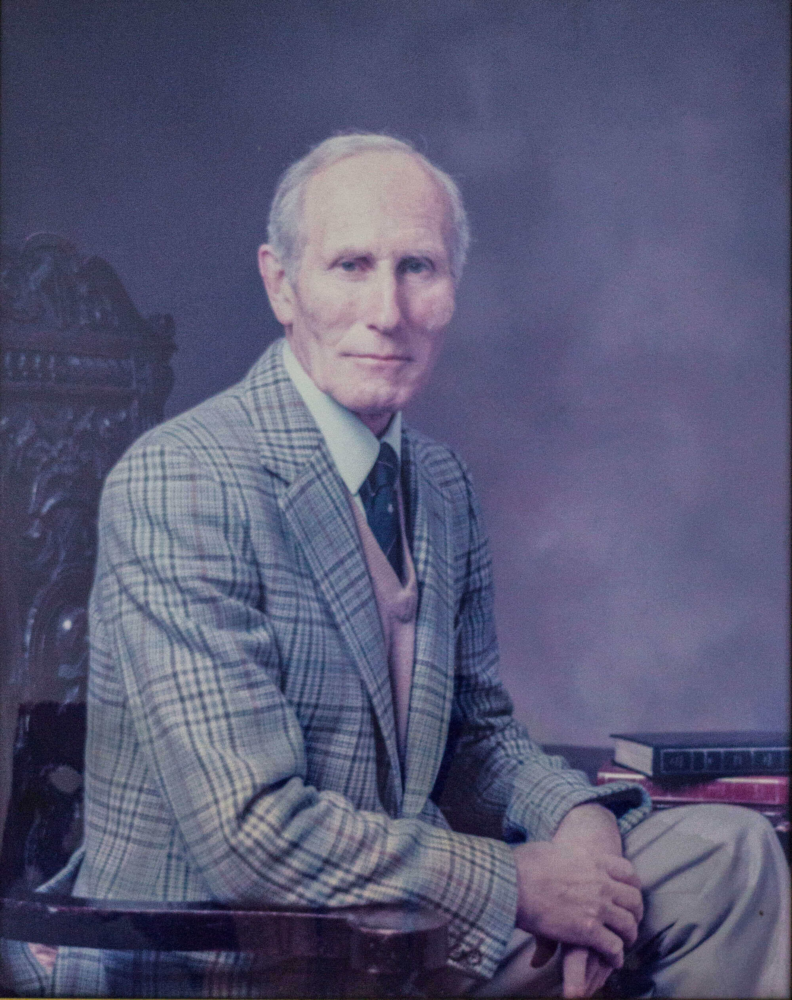
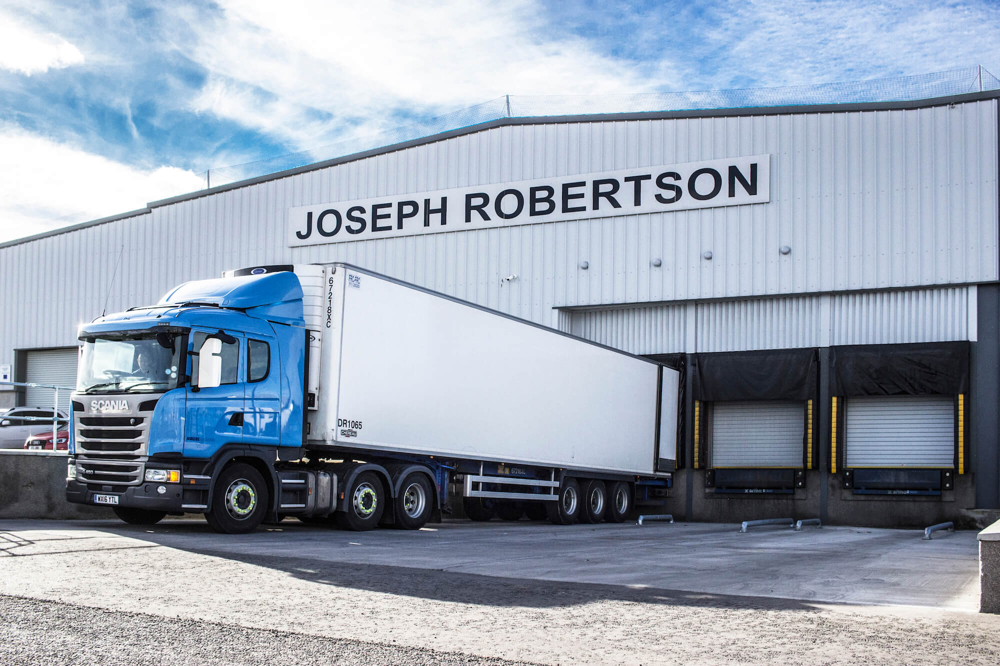

Joseph Robertson
Since 1878
Joseph Robertson
Since 1878
Our Heritage
More than a timeline, this is the story of how Joseph Robertson built a lasting presence in the seafood trade through generations of work, resilience and adaptation.
Joseph Robertson
Since 1878
More than a timeline, this is the story of how Joseph Robertson built a lasting presence in the seafood trade through generations of work, resilience and adaptation.
The business has evolved through changing markets, new generations and major challenges, while keeping hold of the qualities that matter most: commitment, adaptability and pride in doing things properly.

Records show that the company was first established in 1878 by Joseph Robertson.
The business was built on foundations of hard work, integrity and a commitment to quality that still define it today.

As Aberdeen grew into a major centre for fish and seafood trading, Joseph Robertson became part of the working commercial life of the city.
Local relationships, market presence and trade knowledge helped strengthen the business during this era.

The company was formally registered, establishing its legal foundation and reinforcing its long-term place within the trade.

Joseph Robertson celebrated its 50th anniversary, marking a significant milestone in the company’s history and reflecting the dedication of the first generation.

The second generation of family ownership helped carry the business forward while holding onto the standards and work ethic it was built on.

The third generation of family ownership brought new ideas and perspectives, helping the business adapt to changing market conditions.
This period saw the fourth generation introduced into the family business, reinforcing long-term continuity and leadership.
With the business continuing to grow, the decision was made to move into a new purpose-built factory in Crombie Road, Torry.
Joseph Robertson moved to the current factory site on Sinclair Road. The new location provided increased capacity and modern facilities to support the company’s growth ambitions.
Fire caused serious damage and marked one of the most difficult periods in the company’s history.
But if the heritage of the business proves anything, it’s that setbacks are part of the story, not the end of it.

In May 2007 the business moved into a new £8.4m state-of-the-art factory.
The business strategically evolved from a foodservice focus into the chilled and frozen retail food sector.
The fifth generation of family ownership entered the business, continuing the company’s long-term legacy.

The company continued to grow, investing in facilities and expanding operational capability with modern loading bay development.
Opened Centre of Excellence in Grimsby focused on new product development, supporting the innovation team.
Annual turnover reached £40 million, reflecting continued growth and resilience.
Site capacity increased by 40%, strengthening the business for the next stage of growth.
Fifth generation family members emerged into senior management roles covering finance, operations and HR.
A visual record of the people, places and periods that have shaped Joseph Robertson over the years.
Historic staff photograph
Aberdeen market
Second generation leadership
Modern operations
Generational experience matters because it shapes how a business responds under pressure, builds trust and keeps standards where they should be.
If you’re looking for a seafood partner with commercial focus and genuine industry roots, get in touch and we’ll discuss what you need.
Contact Us